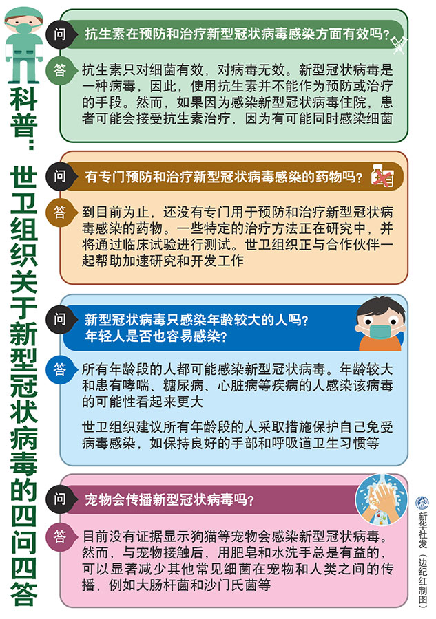

面对当前新型冠状病毒感染肺炎疫情，世界卫生组织近日在其官方网站，回答了公众普遍关心的“抗生素在预防和治疗新型冠状病毒感染方面有效吗”等四个问题。
问：抗生素在预防和治疗新型冠状病毒感染方面有效吗？
答：抗生素只对细菌有效，对病毒无效。新型冠状病毒是一种病毒，因此，使用抗生素并不能作为预防或治疗的手段。然而，如果因为感染新型冠状病毒住院，患者可能会接受抗生素治疗，因为有可能同时感染细菌。
问：有专门预防和治疗新型冠状病毒感染的药物吗？
答：到目前为止，还没有专门用于预防和治疗新型冠状病毒感染的药物。一些特定的治疗方法正在研究中，并将通过临床试验进行测试。世卫组织正与合作伙伴一起帮助加速研究和开发工作。
问：新型冠状病毒只感染年龄较大的人吗？年轻人是否也容易感染？
答：所有年龄段的人都可能感染新型冠状病毒。年龄较大和患有哮喘、糖尿病、心脏病等疾病的人感染该病毒的可能性看起来更大。
世卫组织建议所有年龄段的人采取措施保护自己免受病毒感染，如保持良好的手部和呼吸道卫生习惯等。
问：宠物会传播新型冠状病毒吗？
答：目前没有证据显示狗猫等宠物会感染新型冠状病毒。然而，与宠物接触后，用肥皂和水洗手总是有益的，可以显著减少其他常见细菌在宠物和人类之间的传播，例如大肠杆菌和沙门氏菌等。